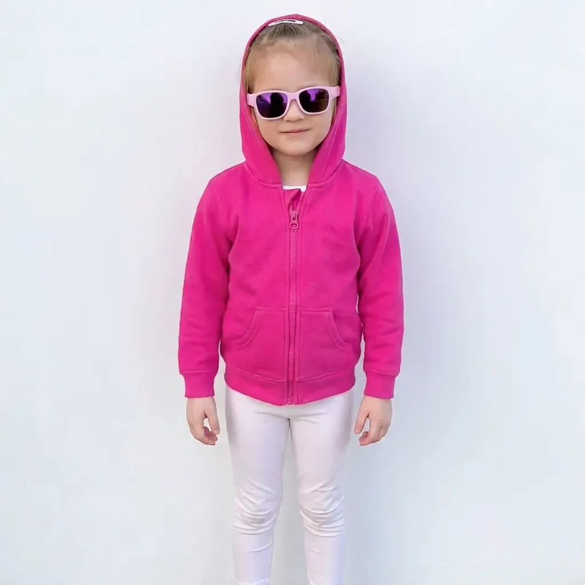
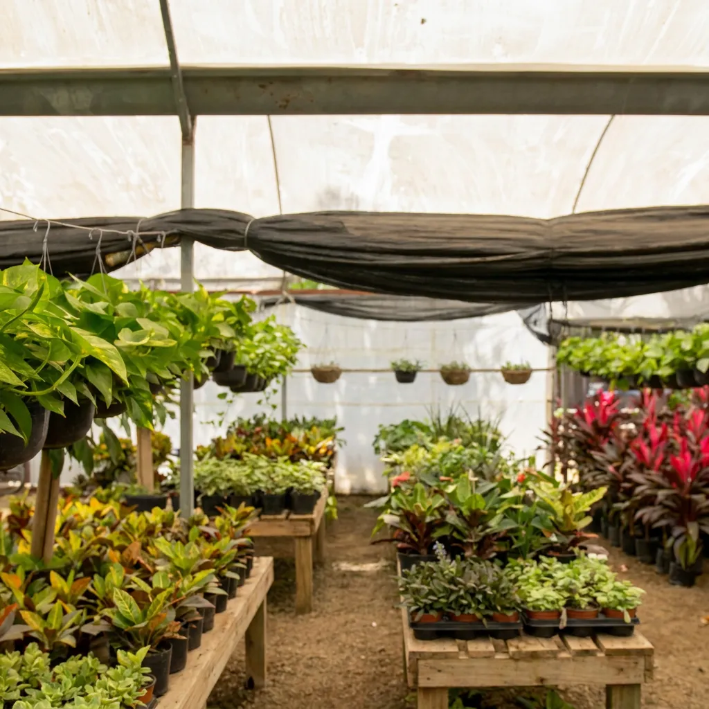
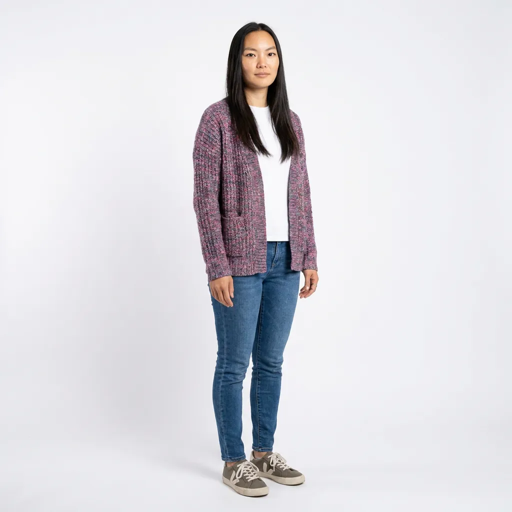
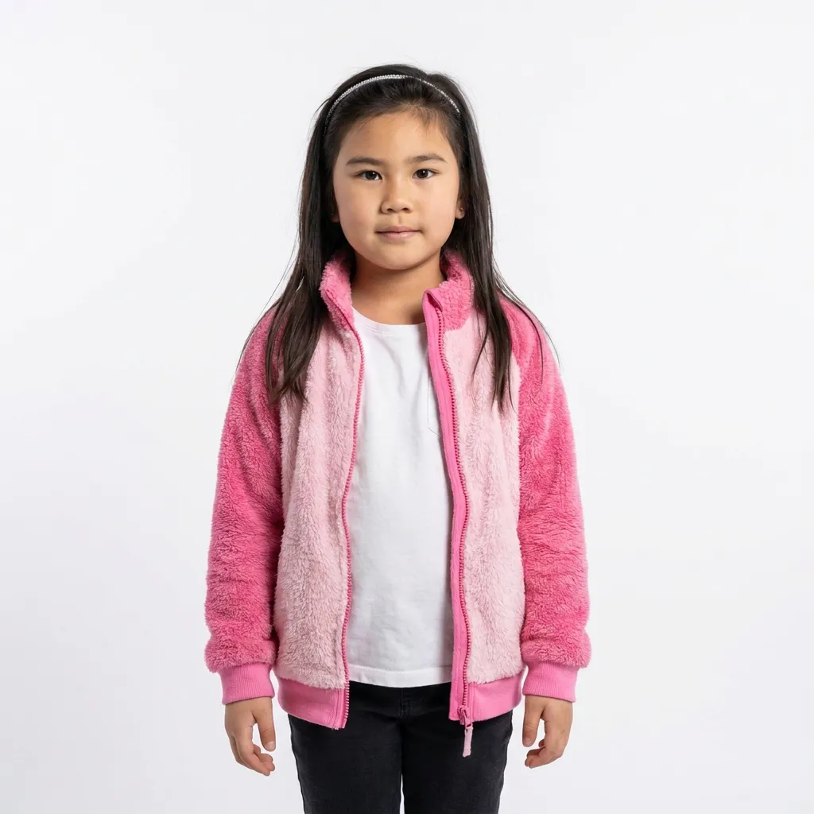
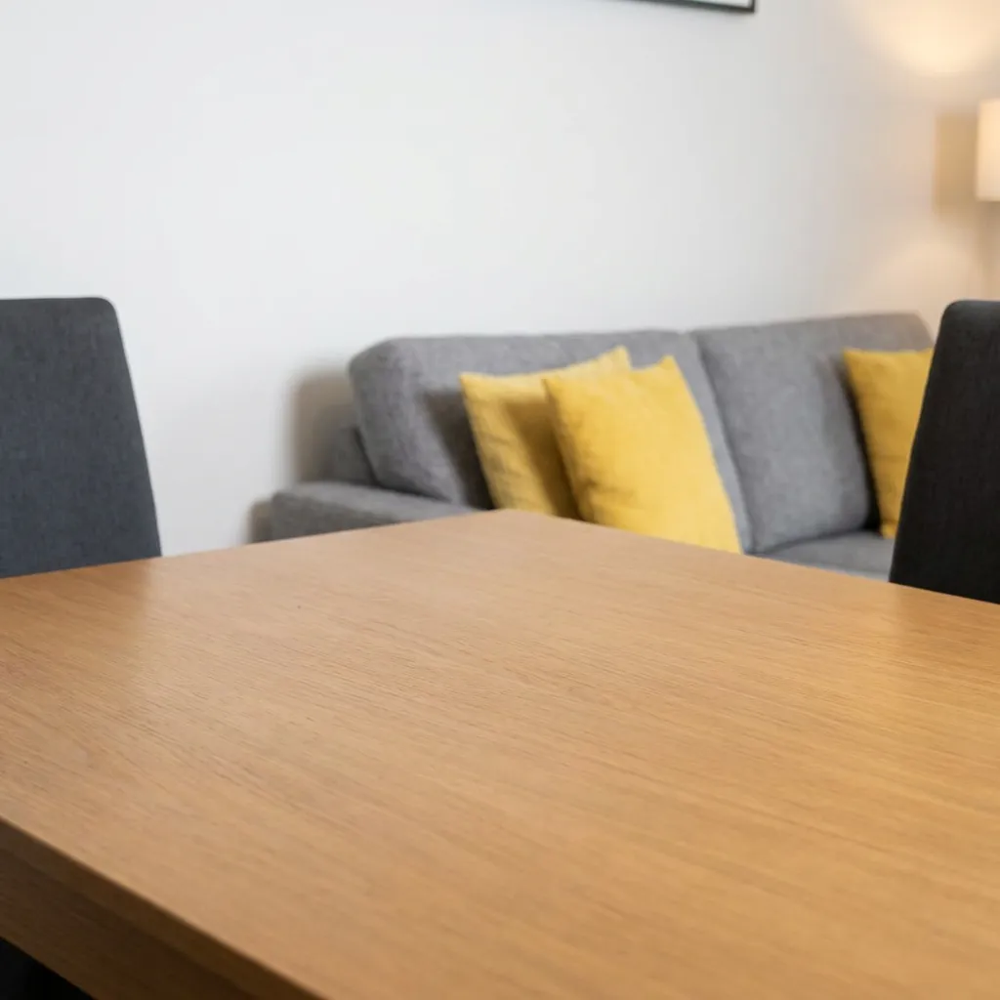

MLLM latent enhancement
Freeze the MLLM and connector; train the DiT with MLLM latents as its content condition.
Cinematic video generation requires inferring unseen temporal details and coordinating character, scene, action, and camera. Factor-Aware Predictive Learning (FAPL) combines paired observation and factor-editing supervision with three training stages to strengthen the use of MLLM representations and support selective control.
Freeze the MLLM and connector; train the DiT with MLLM latents as its content condition.
Swap the designated factor span across paired examples while other factors remain targets.
Freeze the DiT; train the MLLM and connector against a shared text-only/video target.
Setting: Prompt-only video generation, with no target video provided. The model must infer character, scene, action, and camera motion from text.
Short hair replaces the requested long dark hair.
The top is blue instead of white, and the trousers have dark side stripes instead of white ones.
The trousers are dark blue instead of light gray.
The long dark hair, layered white-and-black top, and light gray trousers with white side stripes are preserved.
A woman with long dark hair dances in a modern hallway. She wears a white long-sleeved cropped top over a black sports bra and light gray sweatpants with white side stripes. She moves both arms and shifts her weight between her legs in a continuous natural dance. Her long dark hair, layered white and black top, and gray striped trousers remain consistent throughout. One continuous fixed view shows her dancing body and the bright hallway, with realistic limbs and natural movement.
The blue gloves become light gray.
The hooded sweatshirt becomes a crew-neck sweatshirt without a hood.
The black trousers become brown.
The blue gloves, gray hoodie and black trousers are retained.
A man with a dark beard and short dark hair crouches on a concrete floor in a workshop, wearing a gray hooded sweatshirt, black pants, and a gray baseball cap with a dark emblem on the front. He wears light blue disposable gloves and holds a thin metal tool in his right hand, gesturing with it as he speaks. His left hand is raised with an open palm, and he points forward with his right index finger. Behind him, a black car with a lowered body and large wheels is partially visible, its rear wheel lifted off the ground. To the left, a stack of flat gray panels leans against a white wall, and a yellow wall with a vertical green stripe stands to the right. A white ladder is mounted on the yellow wall, and a yellow bin sits near the car. The lighting is bright and even, illuminating the industrial space with a clean, functional atmosphere.
A round crossed emblem replaces the angular silver shirt emblem.
The shirt has a silver ring instead of the angular silver emblem.
The shirt has a large white symbol instead of the angular silver emblem.
The angular silver emblem, pink underlayer and patterned trousers are retained.
A woman stands in a doorway, facing forward with a slight smile, her long brown hair pulled into a high ponytail and secured with a black sequined bandana. She wears a black short-sleeved t-shirt featuring a large angular silver sequined emblem over a bright pink undershirt, with a matching silver sequined sash tied around her waist and draping down the front. Her pants are loose-fitting and patterned with purple and white floral designs. She gestures subtly with her hands, occasionally tilting her head or looking upward, as if performing or speaking. The setting is a hallway with white walls and a light switch on the right, with an open door behind her revealing a bathroom with a dark vanity, mirror, and towel rack. The lighting is bright and even, illuminating the scene clearly. Fixed camera.
A large red-flowered planter appears beside the bench.
The bench is white, and a tall clipped hedge fills most of the background.
A gray wall replaces the wooden fence behind the bench.
The wooden fence, bench and dense greenery are retained as the woman walks.
An adult woman wearing a light beige jacket and dark trousers walks steadily along a stone path through a quiet garden. Beside the path is a brown wooden bench, behind it a wooden fence, with green shrubs along the fence. The path is clear and unobstructed. The brown wooden bench, wooden fence and green shrubs remain stable throughout. One continuous fixed wide shot shows the walking person and the garden layout clearly. Natural daylight and coherent realistic walking.
The mural has three faces instead of the requested two, with different colors and shapes.
White abstract marks replace the two faces in the mural.
The two faces are redrawn; the red eye and square-tooth grid are missing.
The two teal faces, red eye, square-tooth grid and brick wall are retained.
A short-haired person in a black sleeveless top prepares food at a wooden table in front of a red brick wall. The large mural on the wall has exactly two asymmetric stylized faces with thick black outlines: a darker teal face on the left with one red eye and a grid of square teeth, and a lighter teal-and-white face on the right with a round dark eye and a broad curved grin. A small orange panel separates their upper features. Keep the dark radiator visible at the right edge and the white mixing bowl, colored small bowls, and ingredients on the table. The person handles a clear cup and mixes at the table in one fixed camera view.
Horizontal wall seams replace the diagonal trim, and the right-side plants are missing.
Rectangular wall panels replace the diagonal trim, and the floor becomes pale cream.
The wall loses the diagonal trim and becomes nearly plain.
The diagonal wall trim, dark wood floor and plants on both sides are retained.
Woman exercising on a black mat in a bright room with white walls with diagonal trim, dark wood floor, a broad-leaf plant on the left and potted plants on the right. Fixed view; red sports bra, green shorts, white shoes; continuous squat, rise, and side-step arm movement.
Both hands stay on the rifle instead of leaving the left hand free to gesture.
Both hands hold the rifle without the target’s outward left-hand gesture.
The right hand gestures while the left supports the rifle, reversing the target hand roles.
The right hand holds the rifle while the left hand opens outward.
A man stands outdoors in a barren landscape with leafless trees and a pale sky, holding a black rifle with a mounted scope. He wears a black jacket over a black t-shirt featuring a white design on the chest, a black cap, dark sunglasses, and over-ear headphones. His right hand holds the rifle while his left hand gestures outward, fingers extended, as if explaining or emphasizing a point. He looks slightly to his right, his mouth open mid-speech. The background consists of dry grass, scattered bushes, and a line of bare trees under an overcast sky, with a body of water visible behind him. The lighting is flat and diffused, casting soft shadows, and the overall color palette is muted, dominated by grays, blacks, and earth tones.
The fish is held in the right hand instead of the requested left hand.
The fish appears beside the forearm without a clear hand grip, and the free-hand gesture is missing.
The left hand holds the fish, but the right hand stays low instead of gesturing outward.
The left hand holds the fish while the right hand gestures outward, then returns near the lap.
A woman with blonde hair tied in a high ponytail sits in a kayak on calm water, wearing a dark blue jacket with light blue accents on the shoulders and zipper, black pants, and dark sunglasses. She holds a small green fish upright in her left hand and smiles as she displays it. Her right hand briefly opens outward in a presenting gesture, then lowers to rest near her lap. A yellow and white bag is secured behind her, and a fishing rod stands upright beside her. A mounted action camera on a black pole extends from the front of the kayak, pointing forward. The water reflects bright sunlight, with a distant shoreline covered in green vegetation and patches of yellow leaves. The scene is bathed in natural daylight, creating a clear, vibrant image with a peaceful outdoor atmosphere. Fixed camera.
He performs a wide squat rather than a side lunge, and his hands move toward his face.
He remains upright and omits the side lunge.
He lunges forward rather than sideways.
He performs repeated side lunges with both hands behind his head.
A man in a black long-sleeved shirt and black pants stands in a bright industrial exercise room with a concrete floor, a metal staircase on the left, and a large grid window on the right. Keeping both hands behind his head, he shifts from a wide upright stance into a deep side lunge with the other leg extended, rises back to the wide stance, and lunges sideways again. Fixed wide camera.
The player and wall guitars stay nearly fixed; no clear rightward pan appears.
The player and wall guitars stay nearly fixed; no clear rightward pan appears.
The player and wall guitars stay nearly fixed; no clear rightward pan appears.
The wall guitars shift left as the camera pans right, while the player remains visible.
A short-haired man with glasses in a black T-shirt sits on a stool and plays a brown guitar in a bright music room with pale wooden flooring and wall-mounted guitars. Keep his hands, instrument and seated playing action visible while the camera pans gently to the right, shifting the player and wall guitars left in the frame.
A slight leftward pan appears, with only a small shift of the bookshelf.
The man changes expression, but the bookshelf and lamp stay nearly fixed; no clear leftward pan appears.
The view pans left, though the sweep is smaller than Ours.
The bookshelf, desk, and speaker shift right together during one continuous leftward pan, with the speaker still visible.
A live-action medium shot of a middle-aged man with short dark hair wearing a navy suit, white shirt, dark tie, and red pocket square. He sits at a wooden desk with an open silver laptop, speaks, and then glances down. A dark bookcase filled with books and green plants stands behind him, with a curtain and table lamp at the side. The camera steadily pans left across the room, so the bookcase, desk, and seated man shift right together while he remains visible in one continuous shot.
A largely fixed seated view; the shelf and cushions do not show a clear orbit.
The seated speaker moves, while the viewpoint and wall remain nearly fixed.
The speaker gestures, but the shelf and cushions remain close to a fixed view.
The viewpoint arcs around the woman, with the shelf and cushions shifting behind her.
A young woman with shoulder-length straight brown hair and round glasses wears a white T-shirt under dark blue overalls. She sits on a gray sofa in a bright living room with a pale brick wall, a golden ladder shelf and neatly stacked pink and cream cushions. She remains seated in the same position, speaks naturally and makes a small friendly hand gesture. A continuous smooth 30-degree arc around the stationary woman, from a frontal view toward an oblique view. Keep her head and shoulders fully visible and near the center as the shelves and cushions exhibit clear parallax. No cuts.
Each edit changes one factor—character, scene, action, or camera—while preserving the other three.
Before
After
The lantern glows brightly and the tent opening becomes a different dark backdrop.
A second person visible in Before disappears, while the tent opening and hanging lantern change position.
The tent folds, lantern design and viewpoint change along with the character.
The tent fabric, support cords and hanging lantern remain recognizable around the new long-haired woman.
Before
After
The hair, face and outfit change as requested, but the tiny brown cake becomes a much larger white cake and the board layout shifts.
The beard and cap are replaced by short hair and a blue top, but the kitchen cabinets turn from gray to brown and the cake and knife arrangement shifts.
The new hair and blue top appear and the kitchen remains similar; the knife shifts to the other side of the plate.
The black cap, dark beard and gray T-shirt change to short light-brown hair, a clean-shaven face, blue T-shirt and dark hoodie. The kitchen and cake remain recognizable; the gestures differ in timing.
Before
After
The woman appears, but the foreground lampshade shifts from right to left and the window framing changes.
The requested woman appears, but the large foreground lampshade shrinks to the left edge and the window layout shifts.
The woman appears, but the lampshade moves behind her and the window framing shifts.
The multipane window, brick and foliage, and standing speaking view remain recognizable.
Before
After
The stage backdrop splits horizontally rather than diagonally, pale lettering is cropped at the top, and blue trim appears on the blouse.
The blouses gain cyan collars, and the stage has a horizontal rather than diagonal split.
A cyan collar appears and the preserved side profile becomes a three-quarter view.
The room changes to the stage while the single speaker and side profile are retained.
Before
After
The bookshelf, plant and window appear, but the man and spreadsheet monitor swap sides of the frame compared with Before.
The background changes to a bookshelf and window, but the view shifts from the man standing by a dark monitor to him sitting in profile at a lit monitor.
The bookshelf, plant and window appear, but the view moves closer and changes the man, desk and monitor framing compared with Before.
The room changes to a bright window and white bookshelf while the man, black outfit, spreadsheet monitor and desk remain recognizable.
Before
After
The garden scene changes, but the woman’s face and bangs differ from Before; blue denim remains visible.
The garden scene changes, while the woman changes to long hair and a bright-blue shirt and the viewpoint shifts.
The garden appears, but the shirt becomes brighter plain blue and the view drifts toward frontal.
The woman’s short hair, denim shirt and side view are retained as she speaks in the garden setting.
Before
After
Her hair and the table-and-chair arrangement change when she stands to dance.
The mask now covers her entire face, and the table and chairs are rearranged.
The surgical mask becomes a white full-face mask, and the furniture layout changes.
She dances with the same pink top, gray skirt, mask, table, and tall windows.
Before
After
She lunges rather than squats; her crop top becomes longer and the potted plant changes.
The squats are absent; her crop top becomes longer, and the plant stand and dumbbell rack change.
She squats, but her outfit, the plant placement, the dumbbell rack, and side-to-front framing change.
The red outfit, mat, plant stand, and rack remain recognizable as she completes two squats.
Before
After
Her hat gains a pom-pom, while the plant and floral bedding pattern change.
Her shirt stripes turn from horizontal to vertical, and the duvet flowers become denser.
The fixed view jumps to a close-up and rear view; the plant and duvet pattern also change.
The character and bedroom layout remain recognizable while she smooths the duvet beside the bed.
Before
After
A framed picture appears on the plain wall, and the face barely moves toward the right edge.
The face barely shifts right, while the collared shirt becomes a crew neck.
A framed photograph appears on the wall that should remain plain.
His face shifts toward the right edge as the camera pans left; the wall stays plain.
Before
After
The man moves left through the camper carrying the plate. The change mainly comes from his movement rather than a camera arc.
His plaid shirt becomes solid blue; the cupboards and window stay fixed, with no clear camera arc.
The exterior view sweeps while the interior cupboards and table stay fixed, so this does not show a physical arc inside the camper.
The person keeps eating as the sink, stovetop, cupboard, and window shift at different depths.
Before
After
Different initial composition than its Before clip, but workbench and rear machine remain near fixed during the clip; hand movement dominates.
Man works at tabletop while wall racks and yellow machine remain near fixed; no clear sustained right arc.
Man bends toward blue parts; wall tool arrangement changes and smooth right arc is weak or unclear.
The man, blue parts and workshop remain recognizable through the rightward arc.
Generate multiple shots from shared character and scene images, preserving consistency across changes in action and viewpoint.

Shot 1
A young girl wearing a bright pink hooded sweatshirt, white trousers and white sunglasses, stands in a paved residential courtyard with a brown floppy-eared dog. She holds the leash attached to the dog’s black harness. The girl looks toward the camera and talks, while the dog remains beside her. A slightly elevated camera view includes the girl, the dog and the gray paving. Realistic live-action cinematography, natural movement, one continuous shot.
Shot 2
The sunglasses change from wide oval frames to large round lenses between shots.
Across the two shots, the dog’s face and ears change.
Across the two shots, gray brick paving becomes red brick and the dog’s coat changes.
The girl’s pink hoodie and dark paved setting remain recognizable across the two shots.
Cut to another nearby view of the same girl holding the same dog on its leash in the same courtyard. She continues looking toward the camera and talking while holding the leash. Preserve the people, animal, clothing and their relationship from the preceding shot.

Shot 1
The same male gardener has short brown hair, a neatly trimmed graying beard, a pale blue collared shirt with the sleeves rolled to his forearms, and a long gray apron. In a fixed medium frontal view inside a flower greenhouse, he smiles slightly and slowly lifts a bushy plant with dark green and purplish leaves and an exposed root ball toward the camera. Green gardening gloves support the root ball. Large leafy plants hang on the left, and rows of pink and red foliage fill the background beneath a translucent roof and metal supports. Natural live-action motion in one continuous shot.
Shot 2
His gloves change from blue in Shot 1 to green in Shot 2.
The gray-haired gardener, blue shirt and gray apron continue; the greenhouse shifts from dark red flowers to nursery pots.
The brown-haired gardener and outfit continue; red-flower shelving gives way to dense nursery trays.
The gardener’s outfit continues as the view moves from the root-ball area to the nursery floor.
The same male gardener has short brown hair, a neatly trimmed graying beard, a pale blue collared shirt with the sleeves rolled to his forearms, and a long gray apron. A fixed close, slightly low view crops above his face as he crouches among rows of small green plants in black nursery pots on gravel in the same flower greenhouse. Wearing green gardening gloves, he steadies one small potted plant and brings orange-handled pruning shears toward its stems, working carefully beside an empty black pot. More nursery pots extend behind his hands. Natural live-action motion in one continuous shot.
Shot 3
His clothing continues, while the scene shifts from the nursery floor to an aisle of pink hanging baskets.
The gardener’s outfit stays similar, but nursery pots replace the requested hanging-basket setting.
The gardener and greenhouse remain recognizable, but a flower pot replaces the requested black handled container.
The gardener’s outfit continues as the view moves to the hanging-basket area.
The same male gardener has short brown hair, a neatly trimmed graying beard, a pale blue collared shirt with the sleeves rolled to his forearms, and a long gray apron. A fixed wide view shows him standing on a gravel path inside the curved translucent greenhouse, surrounded by rows of potted flowers and suspended baskets of pink and red blossoms. His bare right hand rises toward a hanging cord above the flower baskets, then lowers as his gaze drops; his left hand carries a small black handled container. The hanging baskets remain in place beneath the arched metal supports. Natural live-action motion in one continuous shot.



Shot 1
A woman with straight dark hair wears a mottled purple and gray knitted cardigan over a white shirt. A young girl with long dark hair held by a narrow light-colored headband wears a bright pink fuzzy sweater. They sit side by side at a wooden table in a softly lit living room, sorting and assembling many colorful interlocking bricks. The girl works on a narrow multicolored tower while the woman handles small pieces beside her and leans in to watch. A green robot-like build, a small wheeled toy, and loose yellow, red, blue, and green bricks are spread across the table. A gray sofa and mustard-yellow cushion sit behind them. Fixed medium front view, one continuous natural live-action shot.
Shot 2
Across the two shots, the mother becomes a blonde adult in pink.
The adult’s purple-gray cardigan becomes bright pink, and the girl’s pale headband becomes blue as bangs appear.
The girl’s long hair in Shot 1 becomes a shorter bob in the close view.
The girl’s pink sleeve and brick-building action continue in the close view.
A young girl with long dark hair held by a narrow light-colored headband wears a bright pink fuzzy sweater. In a fixed extreme close view of the same colorful interlocking-brick activity, hands enter from both sides of a tall narrow tower and carefully align and press pieces near its top. A blue piece projects from one side; stacked yellow, green, red, turquoise, and pale gray pieces form the tower, with a thin dark plate visible across the upper red section by the end. A pink sleeve and the girl's softly blurred, partly hidden face are behind the bricks. The room falls out of focus. One continuous natural live-action shot.
Compare generation guided by MLLM representations across three video backbones.
Before
Noise obscures the performer and the martial-arts routine.
Duplicated, overlapping performer artifacts interrupt the martial-arts routine.
A single performer, the yellow object, an extended arm, and a raised-leg pose are visible on the purple mat.
The performer steps and turns with a sword on the purple mat; the curtain remains visible.
A low sword stance rises into a raised-knee pose; the purple mat and curtain remain visible.
The performer shifts stance and extends his arms on the purple mat; the curtain remains visible.
A man in a white martial arts uniform with a red chest emblem stands on a purple mat, holding a yellow object. He swings it in a circular motion, extends his left arm, and performs a controlled kick. Background: a golden-yellow curtain with vertical folds against a white wall. Fixed camera.
Before
The clip collapses into multicolored noise; the girl and riverside are not discernible.
The girl and riverside remain visible, but the rope vanishes during parts of the clip while she hops.
The rope forms oversized or separate loops during the jumps.
Ours
She keeps jumping in the riverside view, with her appearance and surroundings remaining stable.
She keeps hopping with pink rope arcs visible, while her appearance and the riverside view remain stable.
The girl keeps jumping while her appearance and the riverside scene stay consistent.
A young girl stands on a brick-paved riverside walkway, jumping rope with a pink rope. She wears a dark blue puffer jacket, black pants, and white sneakers, her dark hair pulled back. She holds one rope handle in each hand, both arms extended outward as she swings the rope in a continuous arc. She leaps over the rope with a steady rhythm, her feet lifting in unison. Her body remains upright and focused, eyes forward, as the rope moves in a smooth, circular motion. Behind her, a calm river reflects the sunlight, with a small dock and a red boat visible across the water. Tall residential buildings rise in the background under a clear sky. The scene is bathed in warm, golden sunlight, casting long shadows across the pavement. A tree trunk stands to the right, and bare trees line the far bank of the river. The atmosphere is bright and active, with the girl’s rhythmic motion creating a sense of energy and motion. Fixed camera.
Before
The clip collapses into multicolored noise; the batter and cage are not discernible.
The batter and cage remain visible, though the bat becomes faint or blurred during the swing.
The batter, bat, and cage remain visible as he swings.
Ours
The batter, bat, and netted cage remain recognizable through the swing.
The batter and cage remain recognizable as he swings through with the bat visible.
The batter swings while his appearance and the batting cage remain stable.
A man stands in a batting cage on a grassy field, wearing a black short-sleeved shirt, dark gray shorts, and bright turquoise and orange athletic shoes. He holds a baseball bat with both hands, positioned over his right shoulder, and swings it forward in a powerful arc. His body rotates through the motion, with his left leg lifting off the ground and his right leg extending behind him. A white home plate lies on the grass in front of him, and a wooden bat rests on the ground nearby. The cage is enclosed by a tall black netting supported by metal poles, with a yellow horizontal bar running along the top. Beyond the netting, bare trees and a distant green structure are visible under a clear blue sky. The scene is brightly lit by natural daylight, casting sharp shadows on the ground.
Four failure settings from the paper: interpreting 3D blockouts and camera motion, then generating fight scenes and realistic character performances. Only the blockout case uses a 3D blockout input.
The original layout shows the guards pressing the central figure toward the tabletop.
An upright central figure and a second head at the tabletop appear together instead of one person bending forward.
Exactly three adult men. At the center stands a slender young adult man with a refined, handsome face, long straight black hair falling over his chest and back, and an elegant white cross-collar robe. On either side stands a broad-built, bearded guard wearing an ancient metal helmet and heavy traditional armor. The guards have stern expressions. Keep all three identities, costumes and left-center-right positions consistent throughout the shot. The entrance of a traditional wooden palace hall, with a solid wooden table directly in front of the central man. Golden sunlight enters through the doorway behind them. A few red autumn maple leaves drift outside, while subtle dust particles catch the warm light. Preserve the table's position, height and orientation, and the spatial relationship between the three men and the doorway. High-quality Chinese gongbi-inspired watercolor animation: delicate ink contours, richly layered watercolor pigments, subtle paper texture, flowing painted hair and fabric, and warm, luminous golden light. Render the people, armor, architecture and table in the same coherent hand-painted style. Replace all proxy surfaces and model appearances with finished illustrated characters and scenery. No 3D viewport appearance, software interface or unfinished layout elements. Begin with the young man standing upright at the center behind the table. The guards stand close on his left and right, with their hands already placed firmly on his shoulders. Both guards then press his shoulders downward and forward in one coordinated movement. The young man bends forward at the waist toward the table; his shoulders, neck and head follow one continuous, anatomically coherent motion. His long hair swings forward with the movement. End with the side of his face pressed flat against the wooden tabletop, his head turned slightly so that one eye remains visible. Loose black hair spreads across the wood. His visible eye looks outward with a cold, defiant expression. The guards maintain contact with his shoulders and hold him down. Preserve the reference video's timing, contact relationships and blocking. The shoulder pressure must visibly cause the forward bend and final tabletop contact. Do not substitute kneeling, bowing voluntarily, falling to the floor or stopping above the table. No blood, wounds or additional assault. A single continuous shot. Begin in a medium three-person composition, showing the upright young man between the two guards, their hands on his shoulders, and the tabletop in front of him. Execute a rapid, smooth forward camera push synchronized with the guards pressing him down. Keep his descending head and upper body within the frame while tightening the composition. Finish in a close view of his face against the tabletop, with enough of the guards' hands or armored arms visible to preserve the physical relationship. Match the supplied layout video's camera movement, action rhythm and composition changes. Maintain continuous spatial relationships and a stable screen axis. No cuts, orbit, reverse angle, camera reset or unrelated viewpoint change. Use the supplied video only for camera motion, character blocking, action timing, body contact and composition. Obtain character appearance, environment and rendering style from the descriptions above. Do not reproduce the reference video's proxy character designs, flat model materials, rig controls, overlays or software interface.
The view stays wide and never reaches the requested close-up of the man.
Two adults sit opposite each other at a small wooden table: an Asian man on the left with tousled black hair, stubble, a navy cardigan, black T-shirt and corduroy trousers; an Asian woman on the right with a short bob, straight bangs and a dark floral dress. Keep their faces, outfits and seats consistent. A warm domestic kitchen with a garden window behind the pair, golden afternoon backlight and soft ambient fill. Hot food steams between them. White curtains, potted plants, wooden chairs, cabinets and cookware provide depth. Cinematic semi-photorealistic 3D, natural materials, warm color and restrained film grain. Preserve the physical layout while allowing natural perspective changes. The man looks down at his food with a tired, restrained expression. The woman quietly watches him. Both remain seated with natural breathing and blinking; steam rises continuously. No dialogue, argument, large gestures or new event. A brief, continuous shot. Begin at eye level in a medium two-shot, with the man left and woman right. Smoothly dolly forward toward the man's side, tightening the composition without crossing the table or interaction axis. Finish in a side-front medium close-up of the man, with the woman's soft profile or shoulder at the right edge and the table preserving their spatial relationship. Gradually settle focus on his face and ease to a stop. Maintain natural parallax, a stable horizon and continuous motion; no prolonged opening hold, digital zoom or cut.
The exchange stalls in a punch and guard pose without the requested step back and reset.
Two distinct adult men. Fighter A wears a fitted dark charcoal long-sleeve shirt and has short dark hair. Fighter B wears a black hooded jacket, hood down, and has a cropped hairstyle. Keep their separate faces, outfits and bodies consistent. A realistic industrial warehouse with an open central floor, stacked crates along the sides, concrete walls and warm overhead lamps. Keep the crates and floor stable throughout the fight. A and B face each other, A initially on the left and B on the right. A advances and throws a right straight punch toward B. B moves his head outside the punch line and raises his left forearm to redirect A's attacking forearm. B steps close while maintaining that brief forearm contact, then releases and throws a short right-hand counter toward A's torso. A blocks the counter with his left forearm and shifts his weight backward. They separate by one step and regain their guard. Show the approach, punch, evasion, parry, counter, block and separation as a continuous exchange. Each defensive reaction must follow the corresponding attack, with coherent hand contact and separate limbs. Preserve both identities through mutual occlusion. Allow physically necessary stance and body-orientation changes; no unrelated costume or background changes. No blood, serious injury or weapons. A single continuous locked-off three-quarter side view, wide enough to keep the whole interaction and relevant contact points visible. Normal speed, no slow motion, no cuts, no camera orbit or push-in. Realistic cinematic materials and natural motion blur. Prioritize readable action and spatial continuity over decorative framing.
The requested eye covering and cheek wiping do not appear clearly, and the grief expression remains weak.
An adult man with short dark hair, wearing a dark shirt and holding a blue jacket. Keep his facial identity, hairstyle and clothing consistent. A quiet interior beside a wooden door and doorframe, with soft, subdued lighting. The man's face remains clearly visible whenever his hand is lowered. The man leans against the doorframe, overwhelmed by sadness. His inner eyebrows lift and draw together, his eyes become wet, and his lips tremble slightly. His breathing becomes uneven. He briefly covers his eyes with one hand, wipes one cheek, then lowers his hand. His revealed face still shows restrained grief, with moist eyes and a tense, trembling mouth. Keep the emotion continuous through the brief facial occlusion. A continuous, locked-off medium close-up at eye level. Keep the face and wiping hand visible. Realistic live-action performance, subtle natural movement, no cuts, no dialogue and no text.